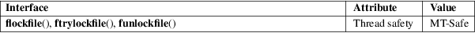

flockfile, ftrylockfile, funlockfile − lock FILE for stdio
Standard C library (libc, −lc)
#include <stdio.h>
void
flockfile(FILE *filehandle);
int ftrylockfile(FILE *filehandle);
void funlockfile(FILE *filehandle);
Feature Test Macro Requirements for glibc (see feature_test_macros(7)):
All functions
shown above:
/* Since glibc 2.24: */ _POSIX_C_SOURCE >= 199309L
|| /* glibc <= 2.23: */ _POSIX_C_SOURCE
|| /* glibc <= 2.19: */ _BSD_SOURCE || _SVID_SOURCE
The stdio functions are thread-safe. This is achieved by assigning to each FILE object a lockcount and (if the lockcount is nonzero) an owning thread. For each library call, these functions wait until the FILE object is no longer locked by a different thread, then lock it, do the requested I/O, and unlock the object again.
(Note: this locking has nothing to do with the file locking done by functions like flock(2) and lockf(3).)
All this is invisible to the C-programmer, but there may be two reasons to wish for more detailed control. On the one hand, maybe a series of I/O actions by one thread belongs together, and should not be interrupted by the I/O of some other thread. On the other hand, maybe the locking overhead should be avoided for greater efficiency.
To this end, a thread can explicitly lock the FILE object, then do its series of I/O actions, then unlock. This prevents other threads from coming in between. If the reason for doing this was to achieve greater efficiency, one does the I/O with the nonlocking versions of the stdio functions: with getc_unlocked(3) and putc_unlocked(3) instead of getc(3) and putc(3).
The flockfile() function waits for *filehandle to be no longer locked by a different thread, then makes the current thread owner of *filehandle, and increments the lockcount.
The funlockfile() function decrements the lock count.
The ftrylockfile() function is a nonblocking version of flockfile(). It does nothing in case some other thread owns *filehandle, and it obtains ownership and increments the lockcount otherwise.
The ftrylockfile() function returns zero for success (the lock was obtained), and nonzero for failure.
None.
For an explanation of the terms used in this section, see attributes(7).

POSIX.1-2008.
POSIX.1-2001.
These functions are available when _POSIX_THREAD_SAFE_FUNCTIONS is defined.
unlocked_stdio(3)